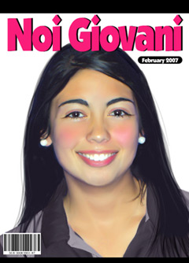

A marketing company is conducting a survey on teenage leisure activities. The results will be used to develop products and activities targeted at this age group.
|  | The survey is being promoted in the teenage magazine Noi Giovani. You are invited to participate. So, let’s print out a copy of the survey and complete it. Cosa fai nel tuo tempo libero? Scegli 5 attività tra quelle elencate Se vuoi, aggiungi add altre attività che tu fai.
|
 |
Refer to Come passi il tuo tempo libero? to learn the new vocabulary in this survey. |
Match the Italian to the English leisure activities listed below. As each Italian pop up at the bottom of the list, drag and drop it onto the corresponding English leisure activity.
In the sondaggio verbs are used extensively to talk about tempo libero activities. |
 |